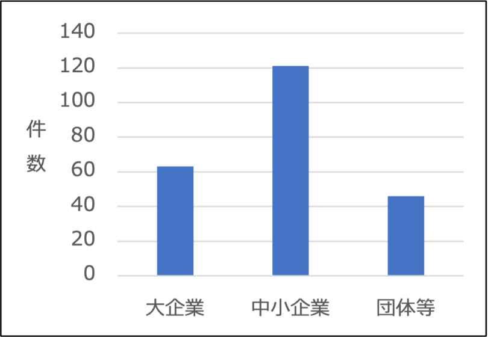

2-2-5. ランサムウェア感染の実態
ランサムウェアは、PCやサーバのデータを暗号化し、その暗号化されたデータを復号することを条件に身代金（金銭）を要求する悪意のあるソフトウェアです。令和4年における企業や団体の被害件数は合計230件であり、被害企業の規模を見ると、大企業が63件、中小企業が121件、団体などが46件でした。ランサムウェアの感染経路については、VPN機器からの侵入が63件で全体の62%を占め、リモートデスクトップからの侵入が19件で18%となっています。これらの侵入は、テレワークなどで使用される機器の脆弱性や弱い認証情報を悪用して行われたものであり、全体の80%に上る割合を占めました。[5]
図9.（令和４年）ランサムウェアの感染経路
図10.（令和４年）ランサムウェアの被害件数
(出典) 警察庁「令和４年におけるサイバー空間をめぐる脅威の情勢などについて」を基に作成
最近のランサムウェアは、以下のような特徴を持っています。図の①②のように、金銭を要求するだけでなく、データの復旧を条件にすると同時に、暗号化前のデータを窃取し、情報を公開するという「二重脅迫」を行うものが存在します。さらに、追加の脅威として③DDoS攻撃などの追加攻撃を行うことで被害を拡大することもあります。また、さらに高度な手法として、④被害者の利害関係者に連絡し、情報を共有するなどの「四重脅迫」を行うケースも確認されています。
図11. ランサムウェアの二重、四重脅迫のイメージ図
具体的なランサムウェア攻撃の事例を紹介し、攻撃手法や被害の具体的な内容を解説します。実際のケースを通じてランサムウェアによってもたらされる被害の大きさを理解し、自身や組織のセキュリティ対策を見直すきっかけとすることが重要です。
基幹システムでランサム被害（某製造メーカー）
事例の概要
サーバが第三者による不正アクセスを受け、個人情報が漏えいした可能性が判明しました。この攻撃者はVPN経由でリモートアクセス機能に侵入、社内サーバに侵入してランサムウェアを実行し、ファイルを暗号化したと考えられています。
被害の原因
この事例の原因は、利用していたVPNの脆弱性による不正アクセスでした。さらに、不審な動きを監視するソフトウェアの最新化が不十分であり、侵入後の被害拡大を防ぐことができませんでした。
この事例から学べること
多数システムでランサム被害（某組合）
事例の概要
ランサムウェアを用いたサイバー攻撃による被害が発生しました。この攻撃によって暗号化されたデータには、数十万人の個人情報が含まれていました。その中には既に脱退した会員の情報も含まれていました。
被害の原因
この事例の被害の原因は、第三者によりネットワーク機器の脆弱性を突かれ、VPN経由で基幹システムサーバを含む複数のサーバへ不正侵入されたことです。この結果、ほとんどのデータが暗号化されてしまいました。
この事例から学べること
詳細理解のため参考となる文献（参考文献）
[5]:警察庁.”令和４年におけるサイバー空間をめぐる脅威の情勢などについて”. https://www.npa.go.jp/publications/statistics/cybersecurity/data/R04_cyber_jousei.pdf , (2023-07-06).